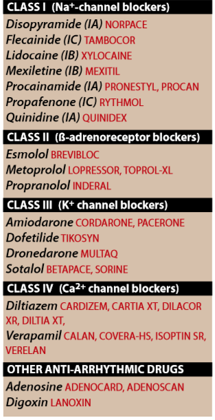
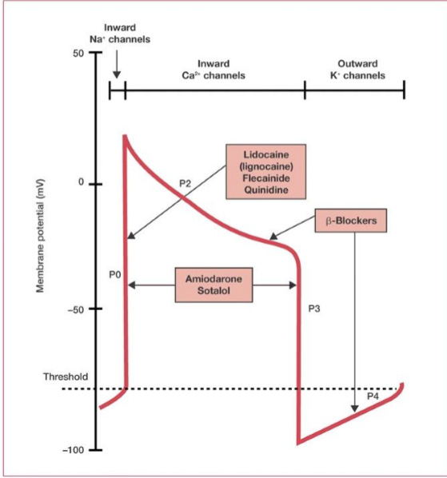
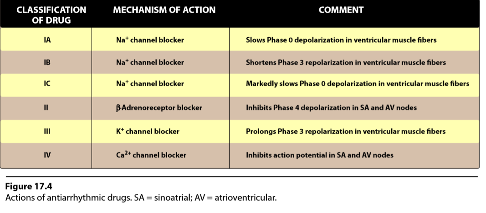
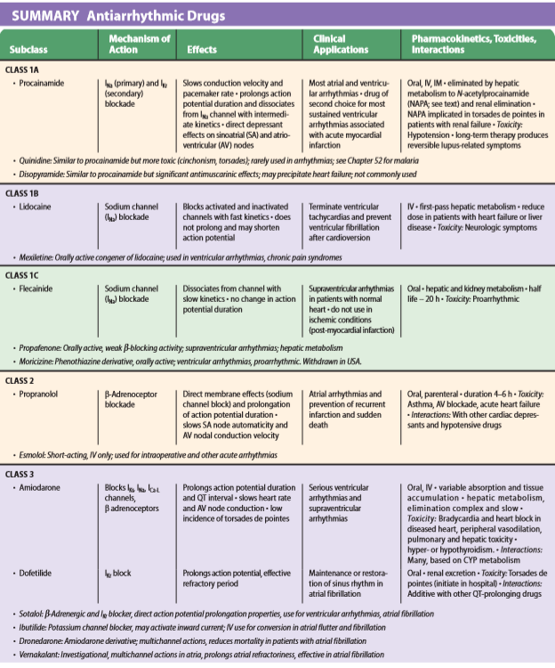
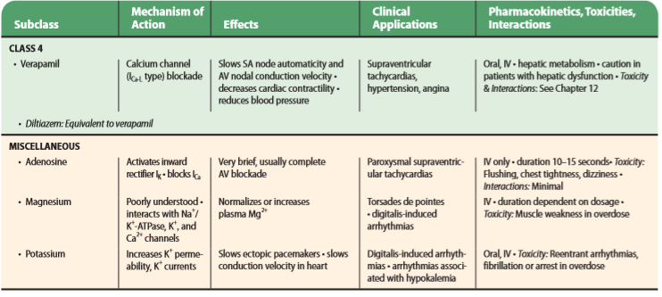
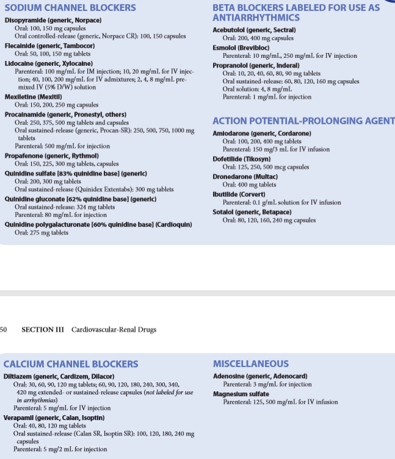

 ⇒ Dysfunction of impulse generation or conduction at any of a number of sites in the heart can cause an abnormality in cardiac rhythm.
→ Abnormal automaticity
- cells remain partially depolarized during diastole and can reach the firing threshold earlier than the normal SA cells
→ Effect of drugs on automaticity
- (by suppress automaticity by blocking either Na+ or Ca2+ channels to reduce the ratio of these ions to K+. → ↓ slope of PHASE 4 (depolarization) and/or ↑ the threshold of discharge to a less negative voltae = mostly on cells with ectopic pacemaker activity.
→ Abnormalities in impulse conduction ( reentry )
- if a unidirectional block caused by myocardial injury or a prolonged refractory period results in an abnormal conduction pathway.
- this short-circuit pathway results in re-excitation of the ventricular muscle, causing premature contraction or sustained ventricular arrhythmia.
→ Effects of drugs on conduction abnormalities
- prevent reentry by slowing conduction (Class I drugs) and/or increasing the refractory period (Class III drugs), thereby converting a unidirectional block into a bidirectional block.
III. CLASS I ANTIARRHYTHMIC DRUGS
→ by blocking voltage-sensitive sodium (Na+) channels = slows the rate of rise of Phase 0 of the action potential
- effect on the resting, fully polarized membrane because of their higher affinity for the active and inactive channels rather than for the resting channel
- possible proarrhythmic effects = X in in patients with reduced left ventricular function and ischemic heart disease.
A.Use-Dependence:
→ bind more rapidly to open or inactivated sodium channels than to channels that are fully repolarized = blockade in tissues that are frequently depolarizing → without interfering with the normal, low-frequency beating of the heart → this property called state-dependence
Class IA
→ slow the rate of rise of the action potential → prolong the action potential → increase the ventricular effective refractory period
Class IB
→ little effect on the rate of depolarization
→ they ↓ APD by shortening the repolarization
→ rapidly interact with Na channels
Class IC
→ depress the rate of rise of action potential
→ slow the conduction
→ they bind slowly to sodium channels
B.Arrythmias
→ inhibition of K channels = widens the action potential → prolonged QT interval on ECG → ↑ risk of developing drug-induced ventricular tachycardia
→ caution when used with drugs that affect the QT interval such as (quinidine and levofloxacin ) or azole antifungals (fluconazole and itroconazole)
Quinidine: (IA)
→ prototype IA class but also show some Class III activity (percipitate arrythmias such us polymorphic ventricular tachycardi → ventricular fibrilation)
→ calcium antagonist (amiodraone and verapamil) replace quinidin in clinical use
1.MoA:
→ bind to open and inactivated sodium channel and prevents sodium influx → slow the rapid upstroke phase 0
→ inhibit potasium channels → slows conduction velocity and ↑ refractoriness
2.Therapeutic USe:
→ artia,AV-junctionl,ventricular tachyarrhythmias
3.Pharmacokinetics:
→ Quinidie sulfate rapidly and almost completely absorbed PO admin.
→ extensive meteabolism by hepatic cythochrome P450 enzymes → active metabolites
4.AE:
→ development of arrhythmia(torsades de pointes)
→ SA/AV block or asystole
→ nausea,vomiting,diarrhea,cinchonism
→ mild -a-adregergic blocking (atropine-like effects)
→ ↑ steady-state conc of digoxin by dispalcement (minor) & ↓ digoxin reanl clearence (major effect)
Procainamide: (derivative of local anesthetic procaine) (IA)
1.Actions:
→ similar to quinidie
2.Pharmacokinetics:
→ well-absorbed PO admn.
→ shrot half-lifef 2-3 hrs
→ portion of drug acetylated → N-acetylprocainamide(NAPA) → ↑ APD and also produce CLASSIII side effects
→ eliminated via the kidney (dosages may need to adjust in patients with renal failure)
3.AE:
→ reversible lupus erythromataosus
→ toxic conc → ventricular arrhythmias
→ CNS side effects (depression,halluginaction,phycosis)
Disopyramide: (IA)
1.Actions:
→ similar to quinidine
→ - intropic effect greater than previous drugs and unlike the latters produce peripheral vasonconstriction
→ ↓ myocardial controctility in patients with impairmnt
→ used in ventricular arrhythmias as alternative of the latter drugs
→ also has some CLASSIII activity
2.Pharmacokinetics:
→ half of the orally ingested drug excreted unchanged by the kidneys
→ 30% of it converted by the liver → less active mono-N-dealkylated metabolite.
3.AE:
→ anticholinergic activity (dry mouth,urinary retentnion,blurred vision,constipation)
Lidocaine (IB)
→ rapidly associate and dissociate from sodium channels
→ affect cardiac cells is depolarized or firing rapidly
→ emergency treatment
1.Actions:
→ local anesthetic
→ shorten Phase3 repolarizataion & ↓APD
2.Therapeutic Use:
→ ventricular arrythmias which arising DURING myocardial ischemia
→ does not markedly slow conduction thus has little effect on artial / AV junciton arrhythmias
3.Pharmacokinetcs:
→ IV because of extensive first-pass metabolism by the liver
→ dealkylated and eliminated almost entirely by the liver
4.AE:
→ failry wide toxic to therapeutic ratio
→ little impairment of left ventricular function & no negative inotropic effect
→ CNS
Mexiletin and Tocaidine: (IB)
→ effects similar to lidocaine
→ PO admin.
→ Mexiletine used for chronic treatment of ventricular arrhythmias (which is associated with previosuly myocardial infranction)
→ Tocainide used for treatment of ventricular tachyarrhythmias but has pulmonary toxicity → pulmonary
Flecaidine: (IC)
→ slowly dissociate from resting sodium channels → prominent effects on normal heart rate
→ treatment of refractory ventricular arrhythmias and prevention of parxysmal artial fibrilation/flutter by disabling symptoms of superventricular tachycardia
1.Action:
→ supress Phase 0in purkinje and myocardial fibers → slow conduction with minor effect on AP and refractoriness
→ automaticity is reduced by an ↑ in the threshold potential rather than ↓ in the slope of Phase 4
2.Therapeutic Use:
→ refractory ventricular arrythmias (useful in supressing premature ventricular contraction)
→ has - inotropic effect and can aggravate congestive heart failure
3.Pharmacokinetics:
→ absorbed orally , → minimal biotransformation
→ half-life 16-20 hrs
4.AE:
→ dizziness,blurred vision,headache,nause

CLASS II ANTIARRHYTHMIC DRUGS:
→ b-adrenergic antagonsit
→ diminish PHASE 4 depol → depressing automaticity → prolonging AV conduction → ↓ heart rate & contractility
→ treating tachycardias caused by ↑ sympathetic activity
→ used for * artial flutter/fibrilation * AV-nodal tachycardia
Propanolol:
→ induce sudden arrhythmic death after myocardial infranction
Metoprolol:
→ β-adrenergic antagonist
→ most widely used in cardiac arrythmias
→ like propanolol → extensively metabolzied and has extensive CNS penetration
Esmolol:
→ very short acting β-blocker
→ IV in acute arrhytmias occured during surgery or emergency situations.
CLASS III ANTIARRHYTHMIC DRUGS:
→ block potassium (K+) channels
→ diminish the outward potassium current during repolarization of cardiac cells
→ ↑ APD without alerting PHASE 0
→ prolong the effective refractory period
→ potential to induce arrhythmias
Amiodarone
1.Action:
→ contain iodine and structually related to thryoxine
→ complex effects showing CLASS I,II,III and IV actions
→ dominant prolongation of the APD and RF
→ antianginal and antiarrhythmic activity
2.Therapeutic Use
→ severe refractory supraventricular and ventricular tachycardias
→ managment of AF and Sinus rythm
→ despite side effects is the most commonly employed antiarrhythmic
3.Pharmacokinetics:
→ incompletely absorbed PO admin.
→ half-life of several weeks (50days)
→ distributes extensively in adipose tissue
→ long term therapy
4.AE:
→ variety of toxic effects after long -term use
→ low doeses reduce toxicity
→ interstitial pulmonary fibrosis, → GIT intolerance,tremor,ataxia,dizziness,hyper/hypo thyroism,liver toxicity,blue skin (by iodine accumulation on the skin )
Dronedarone:
→ ↓ lipophilic ,↓ tissue accumulation and shorter half-life than Amiodarone
→ Class I,II,III and IV actions
→ GIT nature side effects including nause,vomiting and diarrhea
→ less effective than Amiodarone in AF but has a better safety profile
Sotalol:
→ potent non-selective β-blocker
→ two stereoisomers (i-sotalol β blocker & -d-sotalol CLASSIII antiarrhythmic activity )
→ ↓ mortality of acute myocardial infranction
1.Actions:
→ blocks rapid outward potassium current (delayed rectifier) → ↑ APD and repolarizaiton → lengthening the effective refractory period
2.Therapeutic Use:
→ ↓ myocardial infranction
→ supress ectopic beats to ↓ myocardial oxygen demands
→ antifibrilatory effects (strong) in ischemic mycoardium
→ more effective on preventing recurrence of arrhythmia & ↓ mortality than imipramine,mexiletine,procainamide,propafenone,qunidine
3.AE:
→ lowest rate of acute or long-term ae
→ potential(3/4p) of torsades de point syndrome
Dofetilide
→ first-line antiarrhythmic in patients with presisent AF and heart failure or those with coronary artery diseases with impaaired left ventricular function
→ risk proarrhythmia
→ along with amiodarone and b-blockers is the only antiarrhythmic agent tha tis recommended for AF
→ half-life 10hrs → excrection urine → 80%unchanged & 20% inactive or minimally active metabolites
CLASS IV ANTIARRHYTHMIC DRUGS:
→ Ca+2 channe-blockers
→ ↓ inward current carreied by calcium → ↓ rate of PHASE 4
→↓ conduction in tissues that are depended on calcium currents such as AV-node
→ major effect : vascular smooth muscle and the heart
Verapamil and diltiazem
→ greater action on heart than on vasuclar smooth muscle whereas Nifepidine used to treat hypertension exerts a stronger effect on vasular smooth muscle than on the herat
→ Diltiazem is intermediate in its acitons
1.Actions:
→ Calcium → cells via voltage-sensitive channels & receptor-operated channels that are controlled by th binding of agonist (catecholamines to membrane receptors.
→ Verapamil and Diltiazem are more effectings against voltage-sensitive channels → ↓ inward current that trigger cardiac contraction
→ bind only to open ,depolirized channel thus preventing repolarization until the drug dissociate
→ use-dependent ( blocks when the heart beat hardly)
→ slow condcution and prolong the effective refractory period
2.Therapeutic Use
→ artial arrhythmias
→ supraventricular tachycardia
→ ↓ ventricular rate on artial flutter/fibrilation
→ hypertension and angina
3.Pharmacokinetics
→ absorbed PO admn
→ extensively metabolized by the liver
4.AE:
→ - inotropic properties CI to depressed cardiac function
→ ↓ blood pressure (cuz of peripheral vasodilaton)

P


{kind=link}
{kind=link}
{kind=link}
{kind=link}
{kind=link}
{kind=link}
{kind=link}